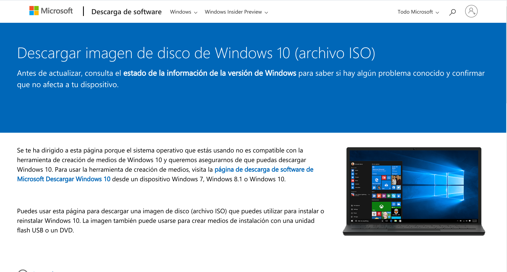
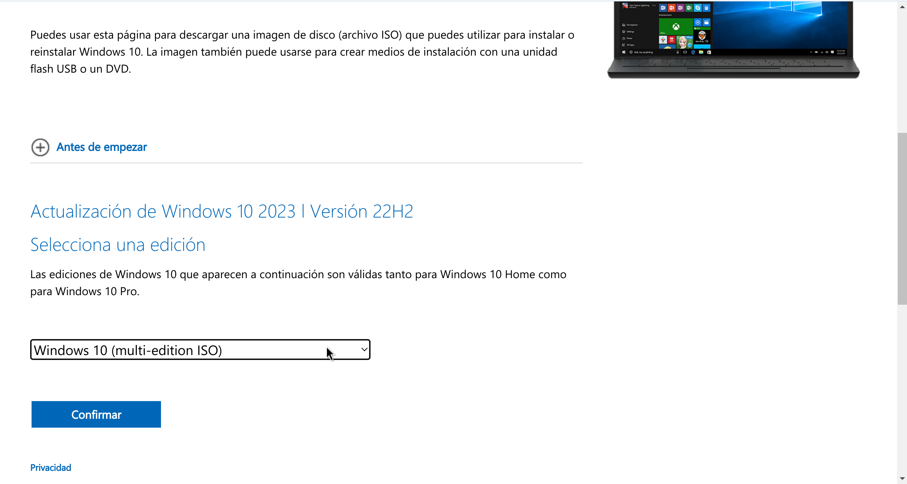
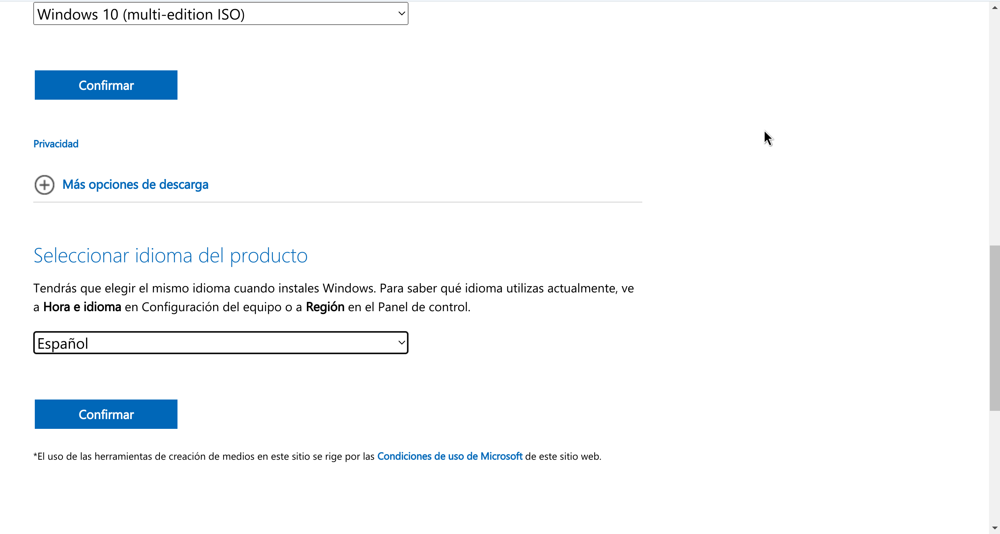
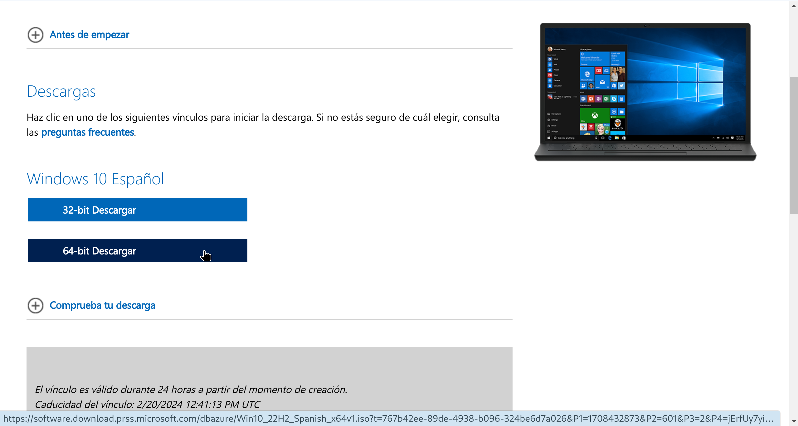

1. Descargar la ISO de Windows10
Para poder descargar la ISO (International Organization for Standardization) de Windows10 tenemos que visitar la siguiente PaginaWeb, oficial de Microsoft.
Bajamos hasta la zona en la que aparece una sección llamada SELECCIONA UNA EDICIÓN. En la pestaña seleccionamos Windows10 (multi-edition ISO) y clicamos en el botón azul llamado Confirmar.
Despues de clicar en el boton azul nos aparecera una nueva sección llamada SELECIONAR IDIOMA DEL PRODUCTO, en la que eligiremos la region a la que pertenemos para configurar la Hora y el Idioma. Por comodidad selecionare la version Español. Clicaremos de nuevo en el boton azul llamado Confirmar.
Seguidamente se nos abrira una nueva seccion en la que nos aparecera dos tipos de descarga, el primero nos descarga Windos ISO a 32 bits y el segundo a 64 bits, es muy importante saber cual de los dos es mejor para la makina que vallamos a montar, en nuestro clicaremos sobre el de 64 bits, automaticamente se empezara a descargar en tu ordenador.
